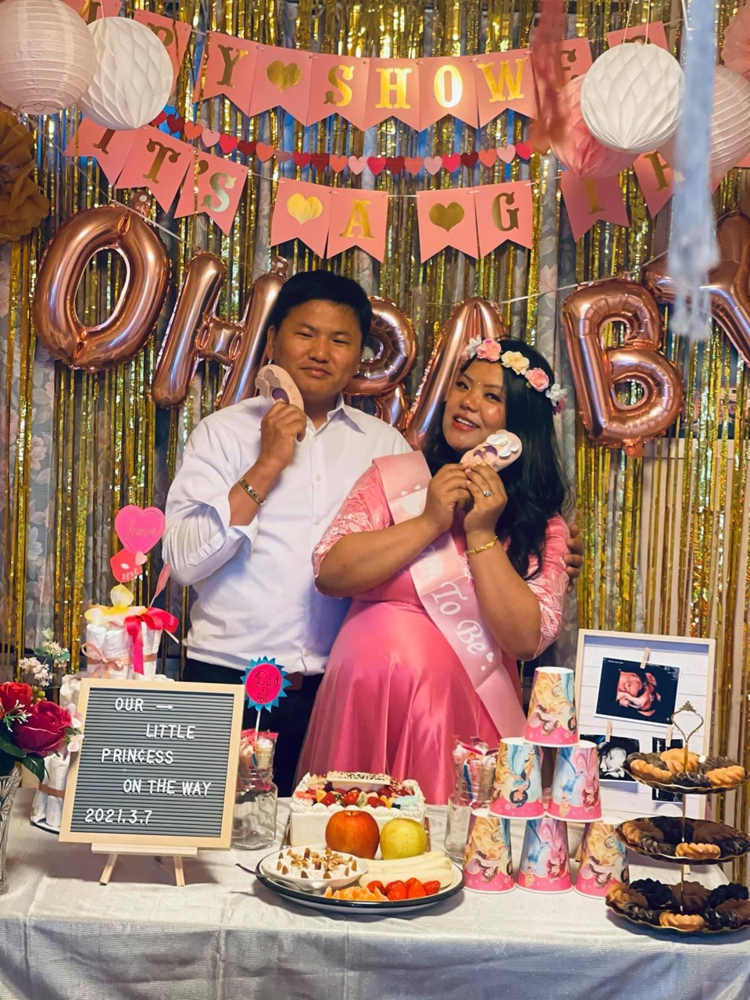
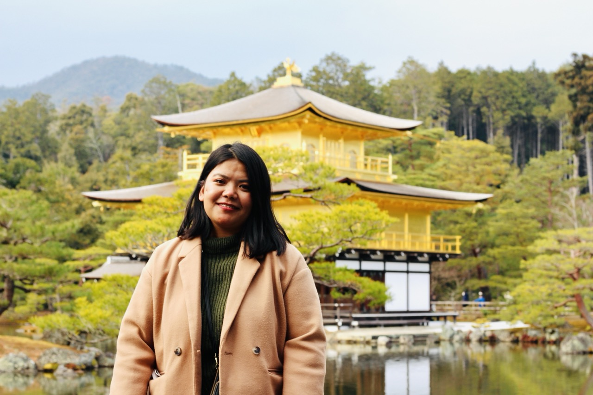
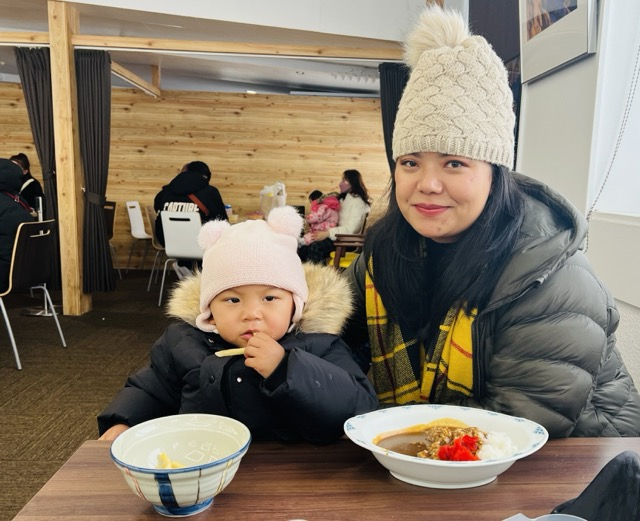
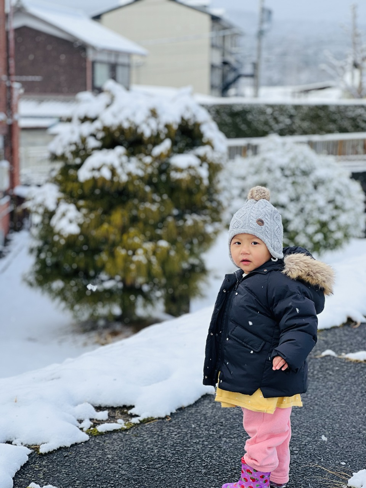
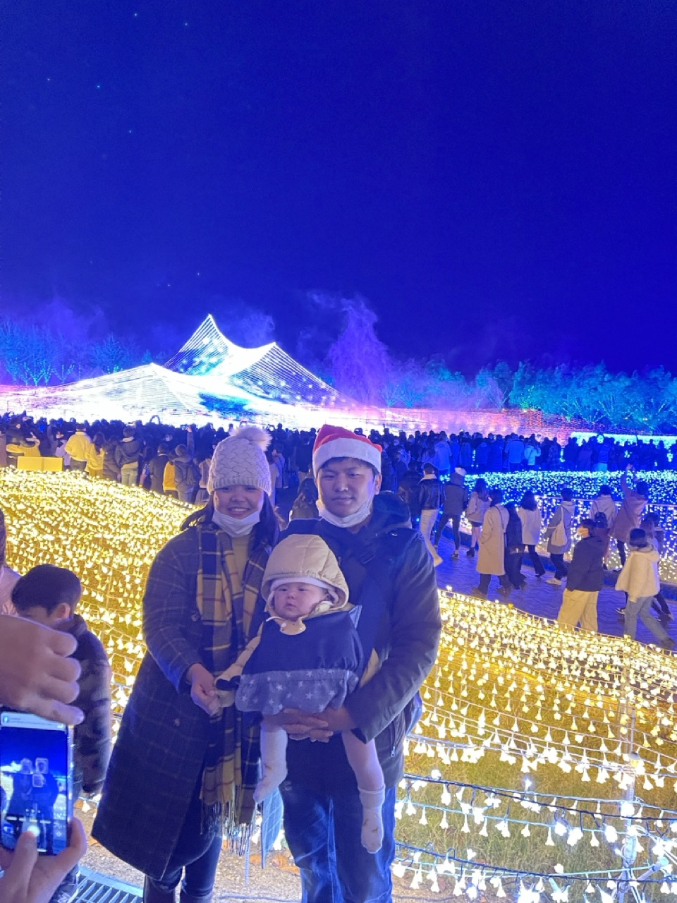
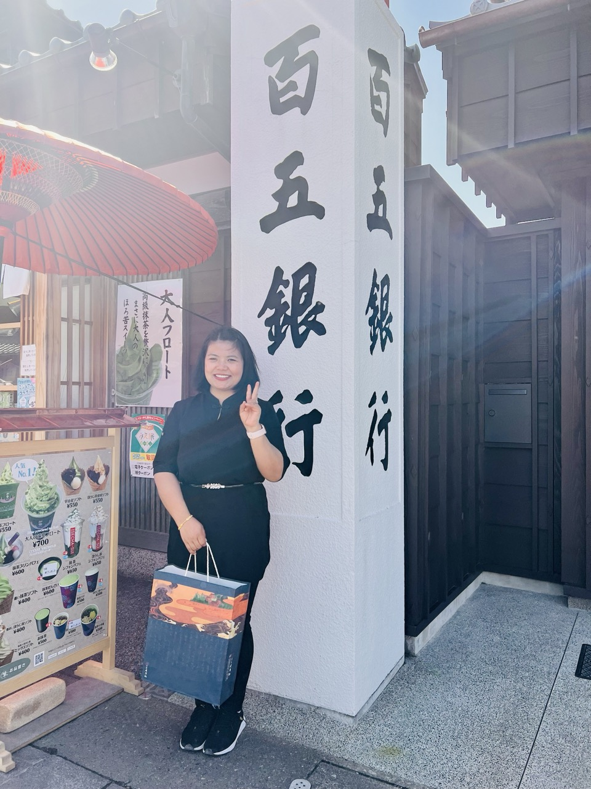

Experiencing First Cheery Bloosom Season.
The next year I was pregnent and gave birth to my daughter, we were so grateful to the Universe
This was the first time we went to Kinkaju Temple Kyoto
The unforgettable day with snow and Japanese food.
 Winter is more Beautiful with the Illuminations.
The very first time we went to Ise Jingu we felt different kind of enlightment and relief inside ourself, we went there on our daugter's birthday and ever since we love to go when we want to start anything new .
